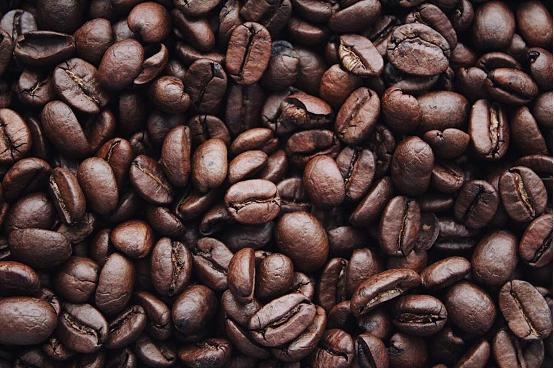
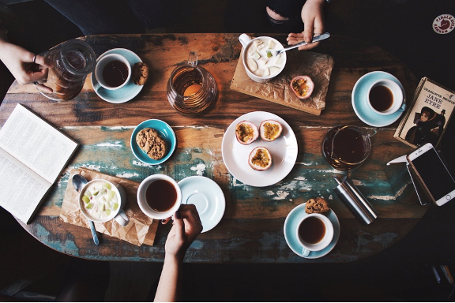

Originating from a cherrry, coffee provides so many unique and complex flavor profiles. Whether it be a dark, medium, or light roast, coffee provides something for everyone. Throughout history, coffee has been a way for people to gather. In Italy, people flock to espresso bars in the morning to stand while sipping espresso and catching up with friends before work. Coffee is a way to unite people.

Syracuse, New York is home to much more than Otto's Army. With lush greenery, farmland, lakes, and much more nearby, Syracuse is ideal for the adventurer at heart. It may surprise people that Syracuse also has some amazing coffee shops.
 